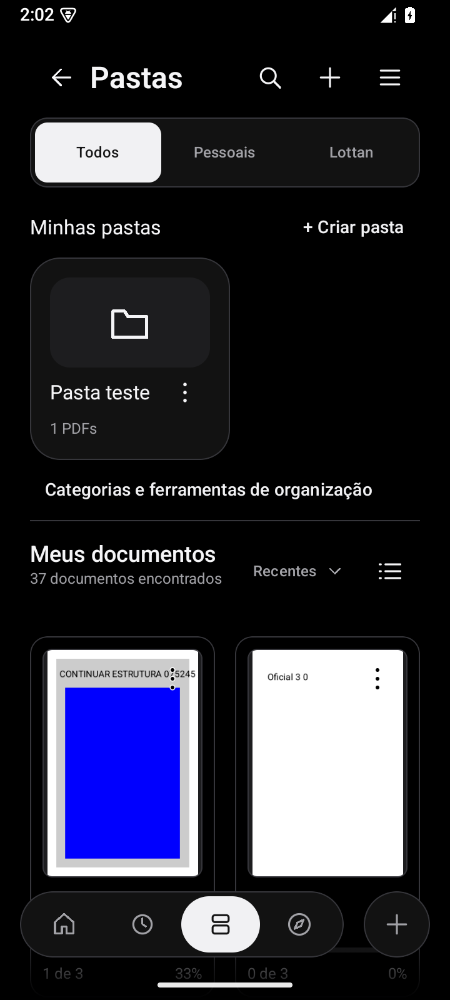
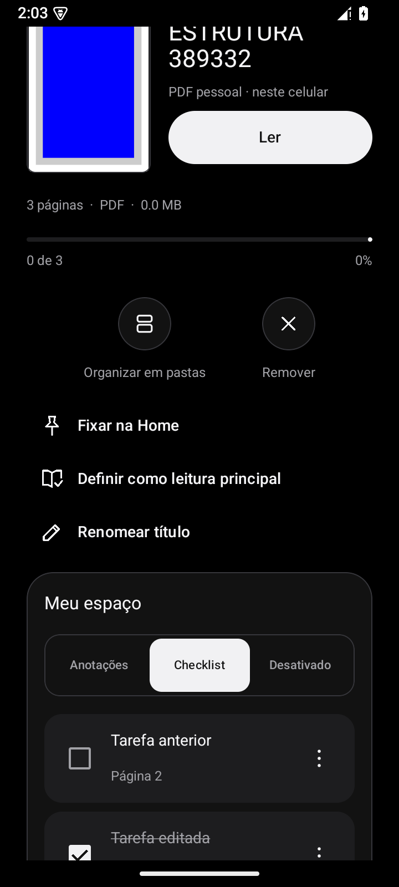
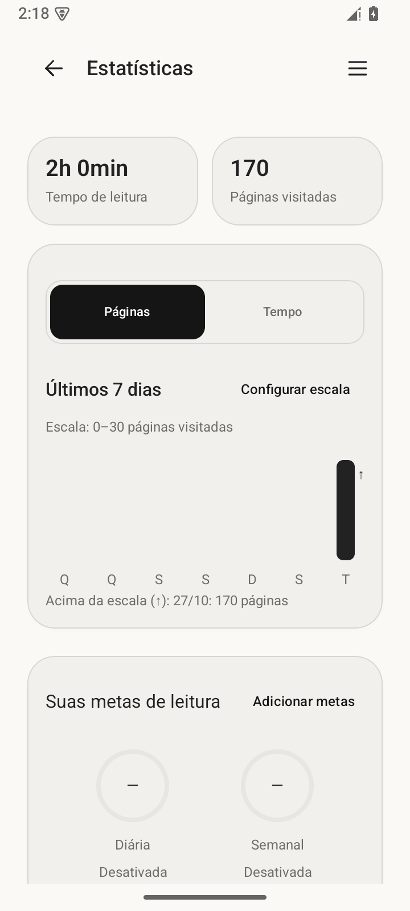
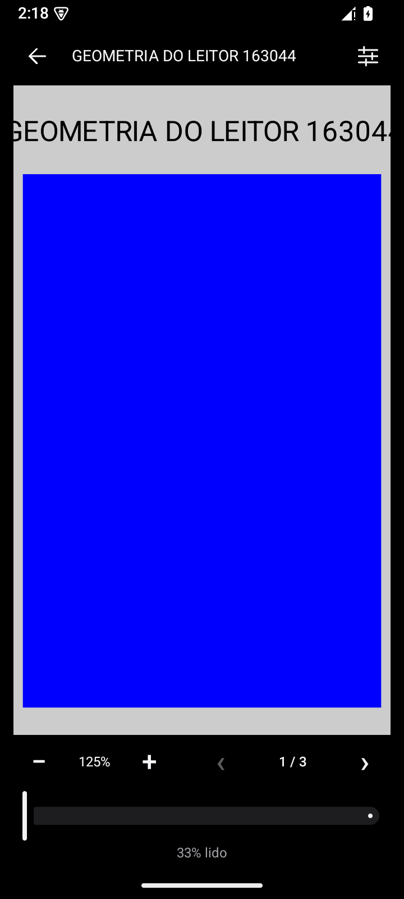
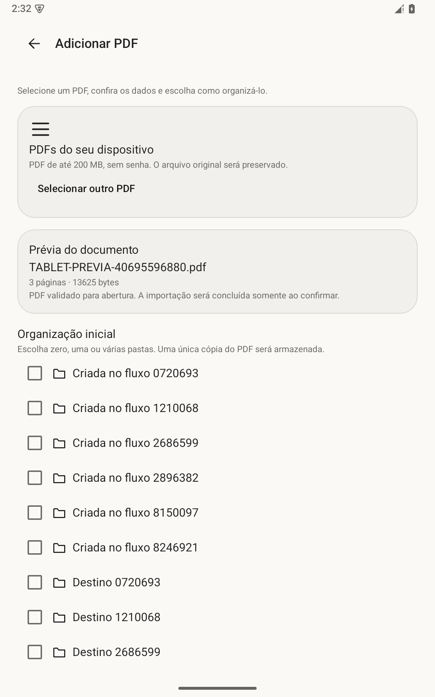
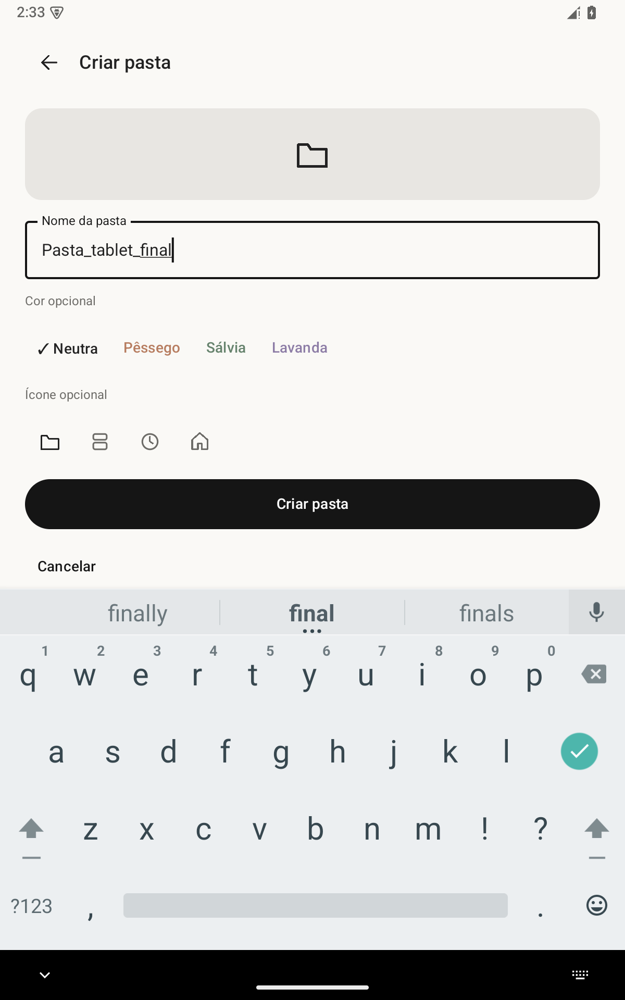
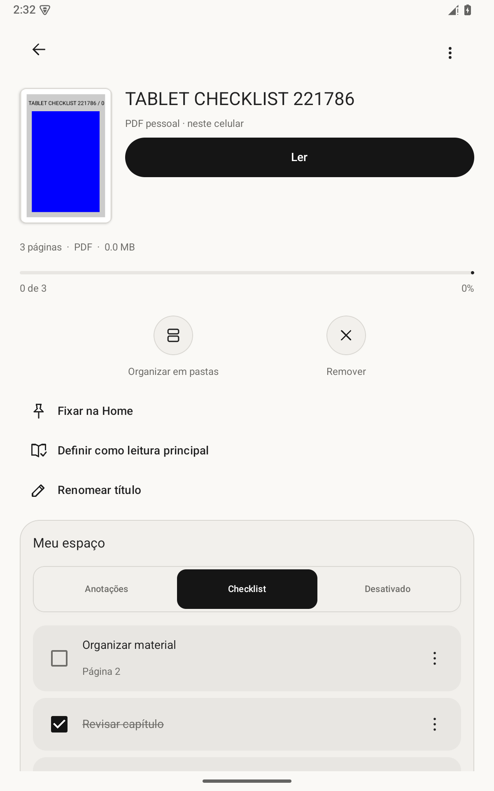
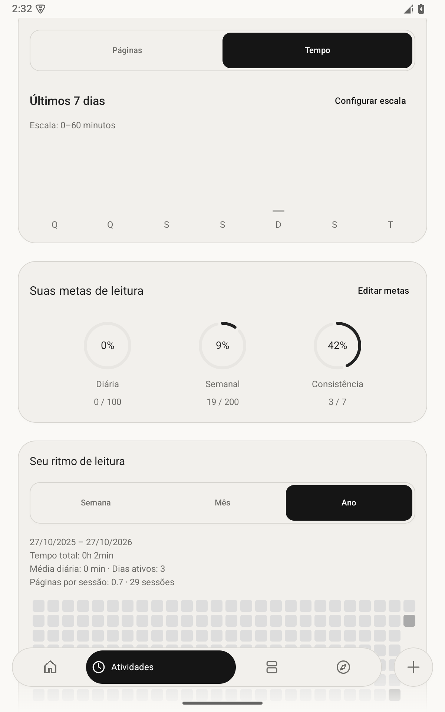

O PDF no centro.
Página única ou rolagem contínua, zoom e marcadores. Mostre ou oculte os controles sem deslocar a página ou perder o zoom da leitura.
UM PRODUTO AUDMANI
Seus PDFs, suas ideias e o seu ritmo. Leia offline, organize um PDF em várias pastas sem duplicá-lo e transforme suas ideias em anotações e tarefas. Acompanhe seu ritmo com escalas de leitura configuráveis.
Baixar para AndroidAndroid 8 ou posterior · Sem conta e sem anúncios
MENOS DISTRAÇÃO. MAIS LEITURA.
A ODMANI (BETA) reúne leitura e organização em uma interface monocromática, com superfícies suaves e controles discretos. O documento continua sendo o protagonista.
Navegue por Home, Atividades, Pastas e Explorar. No botão +, confira a prévia do PDF e escolha suas pastas antes de importar. Ao tocar no card Continuar lendo, veja os detalhes; no botão de leitura, abra o documento diretamente.
Esta é uma versão beta em evolução. Seu feedback ajuda a orientar as próximas melhorias.
DO SEU JEITO
Página única ou rolagem contínua, zoom e marcadores. Mostre ou oculte os controles sem deslocar a página ou perder o zoom da leitura.
Crie pastas com nome, cor e ícone. Pesquise, ordene e vincule o mesmo PDF a várias pastas, mantendo uma única cópia. Excluir uma pasta preserva seus documentos.
Checklist compacto por documento: crie, edite, conclua e exclua tarefas em um editor separado. Vincule uma página para abri-la quando precisar e preserve suas anotações.
Ajuste separadamente as escalas semanais de páginas e minutos. Valores acima do limite continuam registrados. A visão anual abre no período recente e permite explorar o histórico.
Preto absoluto, grafite, claro off-white e automático. Ajuste fundo externo, filtro de papel, brilho e orientação sem alterar o PDF original.
Veja nome, páginas e tamanho do PDF. Escolha várias pastas ou crie uma durante a importação, sem perder a seleção. Seus PDFs e seu progresso ficam disponíveis offline.
CAPTURAS REAIS DA VERSÃO ATUAL
Capturas reais da versão 0000001.0/26, código 14, em smartphone e tablet no emulador Android 15. Os documentos e números exibidos são dados de teste usados na validação, não conteúdo editorial do aplicativo.








BIBLIOTECA & PARCERIAS
A ODMANI é um aplicativo da AUDMANI, com parceria editorial da Lottan. Novas histórias estão a caminho: o catálogo editorial ainda não possui publicações disponíveis. Seus PDFs pessoais continuam em um espaço próprio.
ODMANI (BETA) PARA ANDROID
Versão 0000001.0/26 · código 14
Android 8 ou posterior · 12,03 MB
Build de teste com assinatura compatível com o APK anteriormente oferecido neste site. A atualização exige a mesma assinatura da sua instalação. Evite desinstalar para preservar seus PDFs e dados locais.
APK 0000001.0/26 · código 14: navegação com quatro destinos, pastas sem duplicar PDFs, checklist compacto, importação com prévia, controles do leitor estáveis e escalas configuráveis. Compilação concluída, 9 testes unitários e 17 instrumentados aprovados; inspeção visual em larguras de smartphone e tablet no emulador Android 15. Migração do banco, dados e assinatura preservados nos testes de atualização. Sem teste em aparelho físico nesta rodada.
SHA-256:
46fa2ada207e522f36d7a48c2ec614497882a74dc5ab32eadbd13f7fc366eab5Baixe o APK, abra o arquivo no Android e siga as instruções do sistema. Pode ser necessário permitir instalações pelo navegador. O nome no celular continua sendo ODMANI; a identificação BETA é exibida neste site.
Não há conta, sincronização ou backup completo. Desinstalar pode apagar seus dados locais. O catálogo Lottan depende de publicações oficiais; não há compra ou licença simulada.
AJUDE A MELHORAR A BETA
Encontrou um problema ou teve uma ideia? Conte para a Studio 47 o que aconteceu e como podemos melhorar.
studio.47.agencia.co@gmail.com